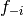
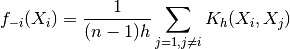
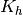
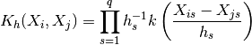

statsmodels.nonparametric.kernel_density.KDEMultivariate.loo_likelihood¶
-
KDEMultivariate.loo_likelihood(bw, func=<function KDEMultivariate.<lambda>>)[source]¶ Returns the leave-one-out likelihood function.
The leave-one-out likelihood function for the unconditional KDE.
Parameters: bw: array_like
The value for the bandwidth parameter(s).
func: callable, optional
Function to transform the likelihood values (before summing); for the log likelihood, use
func=np.log. Default isf(x) = x.Notes
The leave-one-out kernel estimator of  is:

where  represents the generalized product kernel estimator:
